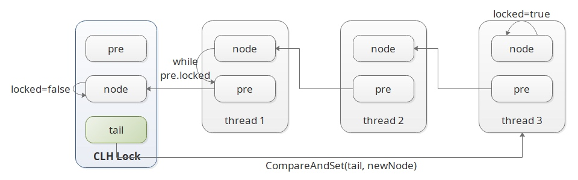
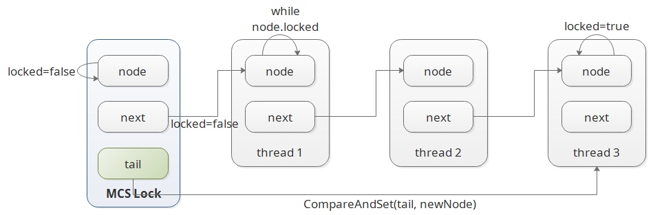

自旋锁简介
通常情况下解决多线程共享资源逻辑一致性问题有两种方式：
互斥锁：当发现资源被占用的时候，会阻塞自己直到资源解除占用，然后再次尝试获取；
自旋锁：当发现占用时，一直尝试获取锁（线程没有被挂起的过程，也就没有线程调度切换的消耗）；
对于这两种方式没有优劣之分，只有是否适合当前的场景，但是如果竞争非常激烈的时候，使用自旋锁就会产生一些额外的问题：
- 可能导致一些线程始终无法获取锁（争抢的时候必然是当前活跃线程获得锁的几率大），也就是饥饿现象；
- 因为自旋锁会依赖一个共享的锁标识，所以竞争激烈的时候，锁标识的同步也需要消耗大量的资源；
- 如果要用自旋锁实现公平锁（即先到先获取），此时就还需要额外的变量，也会比较麻烦；
解决这些问题其中的一种办法就是使用队列锁，简单来讲就是让这些线程排队获取；下面我们介绍常用的两种，即 CLH 锁 和 MCS 锁；
CLH
CLH 是 Craig、Landin 和 Hagersten 三位作者的缩写，我们 JDK 中 java.util.concurrent.locks.AbstractQueuedSynchronizer 就是根据 CLH 锁的变种实现的；
public class CLH implements Lock {
private final ThreadLocal<Node> preNode = ThreadLocal.withInitial(() -> null);
private final ThreadLocal<Node> node = ThreadLocal.withInitial(Node::new);
private final AtomicReference<Node> tail = new AtomicReference<>(new Node());
private static class Node {
private volatile boolean locked;
}
@Override
public void lock() {
final Node node = this.node.get();
node.locked = true;
Node pre = this.tail.getAndSet(node);
this.preNode.set(pre);
while (pre.locked) ;
}
@Override
public void unlock() {
final Node node = this.node.get();
node.locked = false;
this.node.set(this.preNode.get());
}
}

MCS锁
同样 MCS 是 John M. Mellor-Crummey 和 Michael L. Scott 名字的缩写，
public class MCS implements Lock {
private final ThreadLocal<Node> node = ThreadLocal.withInitial(Node::new);
private final AtomicReference<Node> tail = new AtomicReference<>();
private static class Node {
private volatile boolean locked = false;
private volatile Node next = null;
}
@Override
public void lock() {
Node node = this.node.get();
node.locked = true;
Node pre = tail.getAndSet(node);
if (pre != null) {
pre.next = node;
while (node.locked) ;
}
}
@Override
public void unlock() {
Node node = this.node.get();
if (node.next == null) {
if (tail.compareAndSet(node, null)) {
return;
}
while (node.next == null) ;
}
node.next.locked = false;
node.next = null;
}
}

CLH 锁和 MCS 锁区别
却别主要有两点：
- 1、 链表结构的区别；
- 2、 自旋对象的区别，CLH 是在前驱节点上自旋，而 MCS 是在自身节点上自旋；
这里第二点才是最重要的，主要体现在 SMP(Symmetric Multi-Processor) 和 NUMA(Non-Uniform Memory Access) 不同的处理器架构上。
CLH 在 NUMA 系统结构下性能很差，但是在 SMP 系统结构下该法还是非常有效。而 MCS 队列锁适应于 NUMA 系统结构